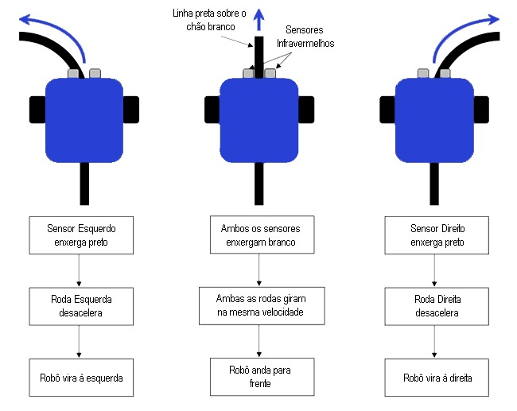
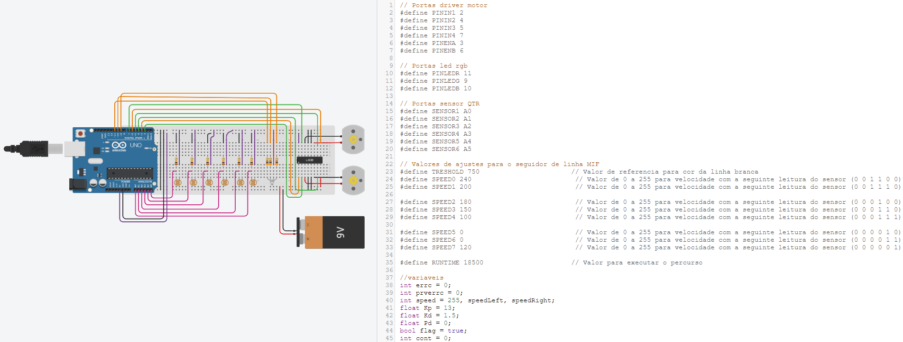

Construindo um seguidor de linha
O Arduino é uma plataforma amplamente utilizada na prototipagem eletrônica graças à sua facilidade de programação e implantação. Hoje faremos uso dessas características para desenvolver um robô seguidor de linha e entender na prática como essas máquinas amplamente utilizadas na indústria funcionam.
Robôs seguidores de linha são máquinas capazes de percorrer um determinado trajeto através de marcações no chão. Isso é possível graças à presença de sensores que identificam as diferenças de cor ao longo do percurso e informam ao microcontrolador esses dados recolhidos, permitindo que, em conjunto com a lógica de programação ali presente, o robô tome decisões e tenha “conhecimento” do caminho que deve seguir.
Programando o Arduino
Para programarmos o Arduino é necessário entender a lógica por trás do funcionamento do sensores, que serão manipulados pelo nosso código para que o carrinho se torne inteligente. Você pode conferir essa lógica de funcionamento na imagem a seguir:

Com isso em mente, podemos dar início à programação do robô.

Após ter seu robozinho programado, chegou a hora de testar seu funcionamento. Para isso, você deverá desenhar o percurso usando fita preta em uma superfície branca. Você pode conferir no vídeo abaixo o resultado que obtivemos com esse projeto: